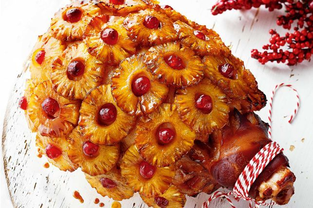

Brown Sugar and Pineapple Glazed Ham
Home

Ingredients
- 1 fully cooded, bone-in ham
- 1 fresh pineapple
- 2 cans of pineapple juice
- 1 cup brown sugar
Method
- Preheat the oven to 325 degrees F (165 degrees C). Place ham, cut-side down, into a roasting pan.
- Cut skin off pineapple with a sharp knife and slice off any brown spots or skin left behind. Cut pineapple into 1/2-inch-thick rings and use a round cutter to remove cores. Pin rings onto ham with toothpicks.
- Bake ham in the preheated oven for 30 minutes.
- While ham bakes, mix pineapple juice and brown sugar in a microwave-safe bowl. Microwave on medium power until glaze is boiling and slightly thickened. Work carefully because glaze will be sticky and very hot.
- Pour 1/2 of the glaze evenly over ham and pineapple rings. Bake ham for 30 minutes more, then pour remaining glaze over ham.
- Continue baking ham until a meat thermometer inserted into the thickest part of ham reads 140 degrees F (60 degrees C), 30 to 60 minutes more.